Introduction à la théorie des ensembles
Le vocabulaire universel des mathématiques : appartenance, inclusion, ensemble des parties, et les opérations \(\cup,\cap,\setminus,\Delta,{}^c,\times\) avec leurs lois (algèbre de Boole, De Morgan), jusqu'aux produits cartésiens et aux partitions.
1. Résumé de cours détaillé
1.1 Ensembles, appartenance, égalité
1.2 Inclusion, ensemble des parties
Ex. \(E=\{1,2,3\}\) : \(\mathcal P(E)=\{\varnothing,\{1\},\{2\},\{3\},\{1,2\},\{1,3\},\{2,3\},E\}\) (\(2^3=8\)).
1.3 Opérations : \(\cup,\ \cap,\ \setminus,\ \Delta,\ {}^c\)
- Neutres/absorbants : \(A\cup\varnothing=A\), \(A\cap\varnothing=\varnothing\), \(A\cup X=X\), \(A\cap X=A\).
- Idempotence : \(A\cup A=A=A\cap A\). Commutativité, associativité.
- Distributivité : \(A\cup(B\cap C)=(A\cup B)\cap(A\cup C)\) et \(A\cap(B\cup C)=(A\cap B)\cup(A\cap C)\).
- Complément : \(A\cup A^c=X\), \(A\cap A^c=\varnothing\).
- De Morgan : \((A\cup B)^c=A^c\cap B^c\) et \((A\cap B)^c=A^c\cup B^c\).
1.4 Produit cartésien, \(n\)-uplets, partitions
2. Exercices d'entraînement (créés) avec corrections
1) Démonstration
On montre la double inclusion. Ici chaque étape est une équivalence : les deux inclusions sont prouvées en une seule chaîne.
Étape 1 : traduire l'appartenance au complémentaire
Soit \(x\in E\).
\[ x\in(A\cap B)^c \iff x\notin A\cap B \iff \operatorname{non}(x\in A\text{ et }x\in B) \]Étape 2 : De Morgan logique
Étape 3 : revenir aux ensembles
\[ x\notin A\ \text{ou}\ x\notin B \iff x\in A^c\ \text{ou}\ x\in B^c \iff x\in A^c\cup B^c \]1) Démonstration
On raisonne par récurrence sur \(n=\operatorname{card}(E)\).
Étape 1 : la propriété
\(P(n)\) : « tout ensemble à \(n\) éléments a \(2^n\) parties ».
Étape 2 : initialisation (\(n=0\))
Le seul ensemble à 0 élément est \(\varnothing\). Sa seule partie est \(\varnothing\) :
\[ \mathcal P(\varnothing)=\{\varnothing\} \qquad\text{a } 1=2^0 \text{ élément} \]Étape 3 : hérédité, découper les parties en deux familles
Soit \(E\) à \(n+1\) éléments. On fixe \(a\in E\) et on pose \(E'=E\setminus\{a\}\), qui a \(n\) éléments. Une partie de \(E\) contient \(a\) ou ne le contient pas :
- celles qui ne contiennent pas \(a\) : ce sont exactement les parties de \(E'\), au nombre de \(2^n\) par hypothèse ;
- celles qui contiennent \(a\) : chacune s'écrit \(F\cup\{a\}\) avec \(F\subseteq E'\), et deux \(F\) différents donnent deux parties différentes : encore \(2^n\).
Étape 4 : additionner
Les deux familles sont disjointes :
\[ \operatorname{card}(\mathcal P(E))=2^n+2^n=2^{n+1} \]1) \(A\subseteq B\Rightarrow A\cup B=B\)
On montre la double inclusion.
Étape 1 : \(B\subseteq A\cup B\)
Toujours vrai.
Étape 2 : \(A\cup B\subseteq B\)
Soit \(x\in A\cup B\).
- Si \(x\in B\) : c'est fini.
- Si \(x\in A\) : comme \(A\subseteq B\), \(x\in B\).
2) \(A\cup B=B\Rightarrow A\cap B=A\)
On montre la double inclusion.
Étape 1 : \(A\cap B\subseteq A\)
Toujours vrai.
Étape 2 : \(A\subseteq A\cap B\)
Soit \(x\in A\). Alors \(x\in A\cup B=B\). Donc \(x\in A\) et \(x\in B\) : \(x\in A\cap B\).
3) \(A\cap B=A\Rightarrow A\subseteq B\)
Étape 1 : « soit \(x\) »
Soit \(x\in A\). Comme \(A=A\cap B\), \(x\in A\cap B\), donc \(x\in B\).
3. Correction intégrale du TD n°2 — Théorie des ensembles
Feuille sans corrigé officiel : les 16 exercices sont résolus intégralement, chaque sous-question traitée. (Notation du TD : \(A/B\) désigne la différence \(A\setminus B\).)
Partie 1 — Extension & compréhension
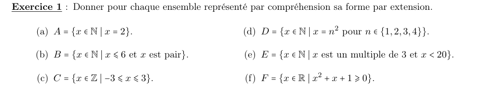
a) \(A=\{x\in\mathbb N\mid x=2\}\)
Étape 1 : lister les éléments
Un seul entier vérifie \(x=2\).
b) \(B=\{x\in\mathbb N\mid x\leqslant 6\text{ et }x\text{ pair}\}\)
Étape 1 : lister les éléments
Entiers naturels pairs de 0 à 6. Attention : 0 est pair et \(0\in\mathbb N\).
c) \(C=\{x\in\mathbb Z\mid -3\leqslant x\leqslant 3\}\)
Étape 1 : lister les éléments
Entiers relatifs de \(-3\) à \(3\), bornes comprises.
d) \(D=\{x\in\mathbb N\mid x=n^2,\ n\in\{1,2,3,4\}\}\)
Étape 1 : calculer les carrés
\[ 1^2=1,\quad 2^2=4,\quad 3^2=9,\quad 4^2=16 \]e) \(E=\{x\in\mathbb N\mid x\text{ multiple de }3,\ x<20\}\)
Étape 1 : lister les multiples de 3
\(3k\) pour \(k=0,1,\dots,6\) (car \(3\times 7=21\geqslant 20\)).
f) \(F=\{x\in\mathbb R\mid x^2+x+1\geqslant 0\}\)
Étape 1 : signe du trinôme
Le coefficient de \(x^2\) vaut \(1>0\) : le trinôme est strictement positif pour tout \(x\).
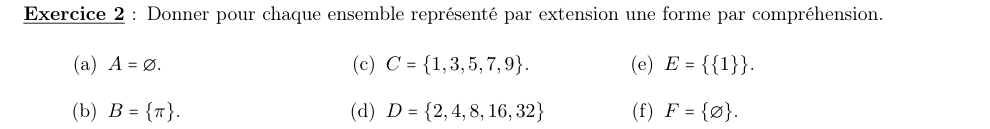
a) \(A=\varnothing\)
Étape 1 : trouver une propriété jamais vraie
Un carré réel n'est jamais strictement négatif.
b) \(B=\{\pi\}\)
Étape 1 : une propriété vraie seulement pour \(\pi\)
c) \(C=\{1,3,5,7,9\}\)
Étape 1 : repérer le motif
Ce sont les impairs de 1 à 9, c'est-à-dire \(2k+1\) pour \(k=0,\dots,4\).
d) \(D=\{2,4,8,16,32\}\)
Étape 1 : repérer le motif
Ce sont les puissances de 2 : \(2^1,\dots,2^5\).
e) \(E=\{\{1\}\}\)
Étape 1 : identifier l'unique élément
\(E\) a un seul élément, qui est l'ensemble \(\{1\}\).
f) \(F=\{\varnothing\}\)
Étape 1 : identifier l'unique élément
\(F\) a un seul élément : l'ensemble vide.
Partie 2 — Relations élément / ensemble
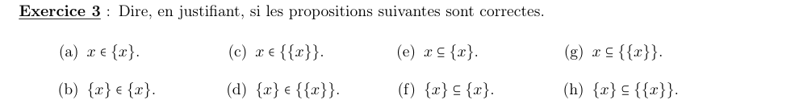
a) \(x\in\{x\}\)
\(F\subseteq E\) : chaque élément de \(F\) est un élément de \(E\).
Étape 1 : lister les éléments de \(\{x\}\)
Son seul élément est \(x\).
b) \(\{x\}\in\{x\}\)
Étape 1 : comparer à l'unique élément
Le seul élément de \(\{x\}\) est \(x\), et \(\{x\}\neq x\).
c) \(x\in\{\{x\}\}\)
Étape 1 : lister les éléments de \(\{\{x\}\}\)
Son seul élément est \(\{x\}\), pas \(x\).
d) \(\{x\}\in\{\{x\}\}\)
Étape 1 : lister les éléments de \(\{\{x\}\}\)
Son seul élément est justement \(\{x\}\).
e) \(x\subseteq\{x\}\)
Étape 1 : que faudrait-il ?
Il faudrait que \(x\) soit un ensemble dont tous les éléments sont égaux à \(x\). Rien ne le garantit : pour \(x=1\), ça n'a même pas de sens.
f) \(\{x\}\subseteq\{x\}\)
Étape 1 : réflexivité
Tout ensemble est inclus dans lui-même.
g) \(x\subseteq\{\{x\}\}\)
Étape 1 : que faudrait-il ?
Il faudrait que \(x\) soit un ensemble dont tous les éléments valent \(\{x\}\). Même problème qu'en e).
h) \(\{x\}\subseteq\{\{x\}\}\)
Étape 1 : traduire l'inclusion
L'unique élément \(x\) de \(\{x\}\) devrait appartenir à \(\{\{x\}\}\), donc être égal à \(\{x\}\).
Étape 2 : conclure
Un objet n'est jamais égal au singleton qui le contient.
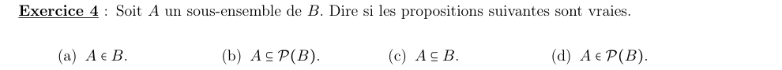
a) \(A\in B\)
Étape 1 : contre-exemple
\(A=\{1\}\) et \(B=\{1,2\}\) : \(A\subseteq B\), mais les éléments de \(B\) sont 1 et 2, pas \(\{1\}\).
b) \(A\subseteq\mathcal P(B)\)
Étape 1 : contre-exemple
Avec le même exemple, \(1\in A\) mais \(1\) n'est pas une partie de \(B\) : \(1\notin\mathcal P(B)\).
c) \(A\subseteq B\)
Étape 1 : relire l'hypothèse
d) \(A\in\mathcal P(B)\)
Étape 1 : appliquer la définition
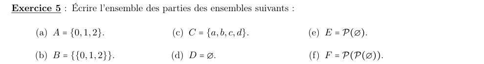
a) \(A=\{0,1,2\}\)
Étape 1 : nombre de parties attendu
\(A\) a 3 éléments : \(2^3=8\) parties.
Étape 2 : les lister par taille
- 0 élément : \(\varnothing\)
- 1 élément : \(\{0\},\{1\},\{2\}\)
- 2 éléments : \(\{0,1\},\{0,2\},\{1,2\}\)
- 3 éléments : \(\{0,1,2\}\)
b) \(B=\{\{0,1,2\}\}\)
Étape 1 : compter les éléments de \(B\)
\(B\) n'a qu'un élément, l'ensemble \(\{0,1,2\}\) : \(2^1=2\) parties.
c) \(C=\{a,b,c,d\}\)
Étape 1 : nombre de parties attendu
\(2^4=16\) parties : \(1+4+6+4+1\) selon la taille.
Étape 2 : les lister par taille
d) \(D=\varnothing\)
Étape 1 : la seule partie du vide
\(2^0=1\) partie : \(\varnothing\) lui-même.
e) \(E=\mathcal P(\varnothing)\)
Étape 1 : écrire \(E\)
\(E=\{\varnothing\}\) a un élément : \(2^1=2\) parties.
f) \(F=\mathcal P(\mathcal P(\varnothing))\)
Étape 1 : écrire \(F\)
D'après e), \(F=\{\varnothing,\{\varnothing\}\}\) a deux éléments : \(2^2=4\) parties.
Étape 2 : les lister
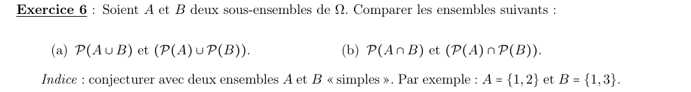
a) \(\mathcal P(A\cup B)\) et \(\mathcal P(A)\cup\mathcal P(B)\)
Étape 1 : conjecture sur un exemple
\(A=\{1,2\}\), \(B=\{1,3\}\), donc \(A\cup B=\{1,2,3\}\) et \(\mathcal P(A\cup B)\) a 8 éléments.
\[ \mathcal P(A)\cup\mathcal P(B)=\{\varnothing,\{1\},\{2\},\{1,2\},\{3\},\{1,3\}\} \]Seulement 6 éléments : il manque \(\{2,3\}\) et \(\{1,2,3\}\).
Étape 2 : l'inclusion toujours vraie
Soit \(X\in\mathcal P(A)\cup\mathcal P(B)\) : \(X\subseteq A\) ou \(X\subseteq B\). Dans les deux cas \(X\subseteq A\cup B\), donc \(X\in\mathcal P(A\cup B)\).
b) \(\mathcal P(A\cap B)\) et \(\mathcal P(A)\cap\mathcal P(B)\)
On montre l'égalité par une chaîne d'équivalences.
Étape 1 : traduire l'appartenance
Soit \(X\) un ensemble.
\[ X\in\mathcal P(A\cap B)\iff X\subseteq A\cap B \]Étape 2 : être inclus dans une intersection
\[ X\subseteq A\cap B\iff(X\subseteq A\text{ et }X\subseteq B)\iff X\in\mathcal P(A)\cap\mathcal P(B) \]Partie 3 — Union & intersection
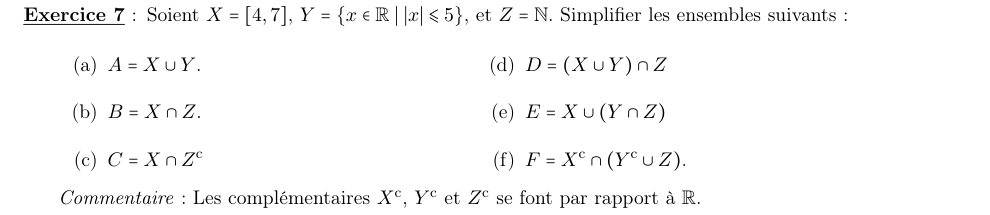
a) \(A=X\cup Y\)
Étape 1 : placer les intervalles
\([-5,5]\) et \([4,7]\) se chevauchent sur \([4,5]\) : leur réunion est un seul intervalle.
b) \(B=X\cap Z\)
Étape 1 : entiers naturels de \([4,7]\)
c) \(C=X\cap Z^c\)
Étape 1 : retirer les entiers
On enlève de \([4,7]\) les entiers \(4,5,6,7\).
d) \(D=(X\cup Y)\cap Z\)
Étape 1 : utiliser a)
\(D=[-5,7]\cap\mathbb N\) : les entiers naturels de 0 à 7.
e) \(E=X\cup(Y\cap Z)\)
Étape 1 : la parenthèse
\[ Y\cap Z=[-5,5]\cap\mathbb N=\{0,1,2,3,4,5\} \]Étape 2 : réunir avec \([4,7]\)
4 et 5 sont déjà dans \([4,7]\).
f) \(F=X^c\cap(Y^c\cup Z)\)
Étape 1 : les complémentaires
\[ X^c=\left]-\infty,4\right[\cup\left]7,+\infty\right[ \qquad Y^c=\left]-\infty,-5\right[\cup\left]5,+\infty\right[ \]Étape 2 : la parenthèse
On ajoute à \(Y^c\) les entiers naturels qui n'y sont pas encore, \(0\) à \(5\) :
\[ Y^c\cup Z=\left]-\infty,-5\right[\cup\{0,1,2,3,4,5\}\cup\left]5,+\infty\right[ \]Étape 3 : intersecter avec \(X^c\) morceau par morceau
- \(\left]-\infty,-5\right[\) est dans \(X^c\) : on le garde.
- Dans \(\{0,\dots,5\}\), 4 et 5 sont dans \([4,7]\) : on garde \(\{0,1,2,3\}\).
- \(\left]5,+\infty\right[\cap X^c=\left]7,+\infty\right[\).
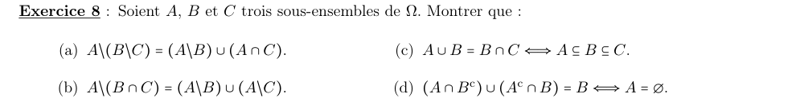
a) \(A\setminus(B\setminus C)=(A\setminus B)\cup(A\cap C)\)
On raisonne par équivalences, élément par élément.
Étape 1 : traduire la différence extérieure
\[ x\in A\setminus(B\setminus C)\iff x\in A\ \text{et}\ \operatorname{non}(x\in B\text{ et }x\notin C) \]Étape 2 : De Morgan
\[ \iff x\in A\ \text{et}\ (x\notin B\ \text{ou}\ x\in C) \]Étape 3 : distribuer le « et » sur le « ou »
\[ \iff (x\in A\text{ et }x\notin B)\ \text{ou}\ (x\in A\text{ et }x\in C) \iff x\in(A\setminus B)\cup(A\cap C) \]b) \(A\setminus(B\cap C)=(A\setminus B)\cup(A\setminus C)\)
On raisonne par équivalences.
Étape 1 : traduire et appliquer De Morgan
\[ x\in A\setminus(B\cap C)\iff x\in A\ \text{et}\ (x\notin B\text{ ou }x\notin C) \]Étape 2 : distribuer
\[ \iff (x\in A\text{ et }x\notin B)\text{ ou }(x\in A\text{ et }x\notin C)\iff x\in(A\setminus B)\cup(A\setminus C) \]c) \(A\cup B=B\cap C\iff A\subseteq B\subseteq C\)
Étape 1 : sens \(\Leftarrow\)
Si \(A\subseteq B\subseteq C\) : \(A\cup B=B\) et \(B\cap C=B\). Donc \(A\cup B=B\cap C\).
Étape 2 : sens \(\Rightarrow\), coincer \(B\)
On suppose \(A\cup B=B\cap C\). On a toujours \(B\cap C\subseteq B\subseteq A\cup B\). Avec l'hypothèse :
\[ A\cup B=B\cap C\subseteq B\subseteq A\cup B \]Le début et la fin sont égaux, donc toutes ces inclusions sont des égalités : \(A\cup B=B\) et \(B\cap C=B\).
Étape 3 : conclure
\(A\cup B=B\) donne \(A\subseteq B\) ; \(B\cap C=B\) donne \(B\subseteq C\).
d) \((A\cap B^c)\cup(A^c\cap B)=B\iff A=\varnothing\)
Étape 1 : reconnaître le membre de gauche
\((A\cap B^c)\cup(A^c\cap B)=(A\setminus B)\cup(B\setminus A)=A\,\Delta\,B\) : les éléments qui sont dans exactement un des deux ensembles. L'équation s'écrit \(A\,\Delta\,B=B\).
Étape 2 : sens \(\Leftarrow\)
Si \(A=\varnothing\) : \(A\cap B^c=\varnothing\) et \(A^c\cap B=B\), donc le membre de gauche vaut \(B\).
Étape 3 : sens \(\Rightarrow\), par l'absurde
On suppose \(A\,\Delta\,B=B\) et on prend \(x\in A\).
- Si \(x\in B\) : \(x\) est dans les deux ensembles, donc \(x\notin A\,\Delta\,B=B\). Contradiction.
- Si \(x\notin B\) : \(x\) est dans exactement un ensemble, donc \(x\in A\,\Delta\,B=B\). Contradiction.
Aucun \(x\) ne peut être dans \(A\).
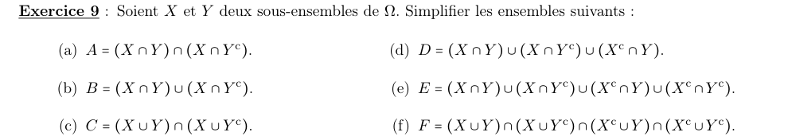
a) \(A=(X\cap Y)\cap(X\cap Y^c)\)
Étape 1 : regrouper (associativité de \(\cap\))
\[ A=X\cap(Y\cap Y^c)=X\cap\varnothing \]b) \(B=(X\cap Y)\cup(X\cap Y^c)\)
Étape 1 : factoriser par \(X\)
\[ B=X\cap(Y\cup Y^c)=X\cap\Omega \]c) \(C=(X\cup Y)\cap(X\cup Y^c)\)
Étape 1 : factoriser par \(X\)
\[ C=X\cup(Y\cap Y^c)=X\cup\varnothing \]d) \(D=(X\cap Y)\cup(X\cap Y^c)\cup(X^c\cap Y)\)
Étape 1 : les deux premiers termes
D'après b), ils donnent \(X\) : \(D=X\cup(X^c\cap Y)\).
Étape 2 : distribuer
\[ D=(X\cup X^c)\cap(X\cup Y)=\Omega\cap(X\cup Y) \]e) \(E\) : réunion des quatre cases
Étape 1 : regrouper deux par deux
Par b), \((X\cap Y)\cup(X\cap Y^c)=X\), et de la même façon \((X^c\cap Y)\cup(X^c\cap Y^c)=X^c\).
\[ E=X\cup X^c \]f) \(F=(X\cup Y)\cap(X\cup Y^c)\cap(X^c\cup Y)\cap(X^c\cup Y^c)\)
Étape 1 : les deux premiers facteurs
D'après c), ils valent \(X\).
Étape 2 : les deux derniers facteurs
\[ (X^c\cup Y)\cap(X^c\cup Y^c)=X^c\cup(Y\cap Y^c)=X^c \]Étape 3 : conclure
\[ F=X\cap X^c \]Partie 4 — Approfondissement
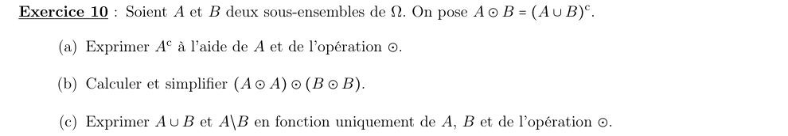
a) Exprimer \(A^c\)
Étape 1 : prendre \(B=A\)
\[ A\odot A=(A\cup A)^c=A^c \]b) Calculer \((A\odot A)\odot(B\odot B)\)
Étape 1 : utiliser a)
\[ (A\odot A)\odot(B\odot B)=A^c\odot B^c=(A^c\cup B^c)^c \]Étape 2 : De Morgan
c) Exprimer \(A\cup B\) et \(A\setminus B\)
Étape 1 : \(A\cup B\) est le complémentaire de \(A\odot B\)
\[ A\cup B=\big((A\cup B)^c\big)^c=(A\odot B)^c \]Par a), le complémentaire de \(U\) est \(U\odot U\), avec \(U=A\odot B\) :
\[ A\cup B=(A\odot B)\odot(A\odot B) \]Étape 2 : \(A\setminus B=A\cap B^c\)
On essaie \(A^c\odot B\) :
\[ (A\odot A)\odot B=A^c\odot B=(A^c\cup B)^c=A\cap B^c \]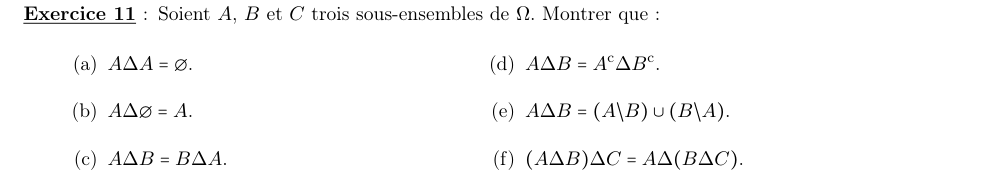
a) \(A\,\Delta\,A=\varnothing\)
Étape 1 : appliquer la définition
\[ A\,\Delta\,A=(A\setminus A)\cup(A\setminus A)=\varnothing\cup\varnothing \]b) \(A\,\Delta\,\varnothing=A\)
Étape 1 : appliquer la définition
\[ A\,\Delta\,\varnothing=(A\setminus\varnothing)\cup(\varnothing\setminus A)=A\cup\varnothing \]c) \(A\,\Delta\,B=B\,\Delta\,A\)
Étape 1 : la réunion est commutative
\[ (A\setminus B)\cup(B\setminus A)=(B\setminus A)\cup(A\setminus B) \]d) \(A\,\Delta\,B=A^c\,\Delta\,B^c\)
Étape 1 : simplifier \(A^c\setminus B^c\)
\[ A^c\setminus B^c=A^c\cap(B^c)^c=A^c\cap B=B\setminus A \]En échangeant les rôles : \(B^c\setminus A^c=A\setminus B\).
Étape 2 : réunir
\[ A^c\,\Delta\,B^c=(B\setminus A)\cup(A\setminus B)=A\,\Delta\,B \]e) \(A\,\Delta\,B=(A\setminus B)\cup(B\setminus A)\)
Le cours définit aussi \(A\,\Delta\,B=(A\cup B)\setminus(A\cap B)\). On montre que les deux écritures coïncident, par équivalences.
Étape 1 : traduire \((A\cup B)\setminus(A\cap B)\)
\[ x\in(A\cup B)\setminus(A\cap B)\iff (x\in A\text{ ou }x\in B)\ \text{et}\ (x\notin A\text{ ou }x\notin B) \]Étape 2 : discuter selon \(x\in A\)
- Si \(x\in A\) : la condition devient \(x\notin B\), c'est-à-dire \(x\in A\setminus B\).
- Si \(x\notin A\) : la condition devient \(x\in B\), c'est-à-dire \(x\in B\setminus A\).
f) \((A\,\Delta\,B)\,\Delta\,C=A\,\Delta\,(B\,\Delta\,C)\)
Étape 1 : décrire \(A\,\Delta\,B\) en comptant
D'après e), \(x\in A\,\Delta\,B\) si et seulement si \(x\) est dans un nombre impair (ici : exactement 1) des ensembles \(A,B\).
Étape 2 : membre de gauche
\(x\in(A\,\Delta\,B)\,\Delta\,C\) si et seulement si \(x\) est dans exactement un de \(A\,\Delta\,B\) et \(C\) :
- \(x\in A\,\Delta\,B\) et \(x\notin C\) : \(x\) est dans 1 ensemble parmi \(A,B,C\) ;
- \(x\notin A\,\Delta\,B\) et \(x\in C\) : \(x\) est dans 0 ou 2 de \(A,B\), donc dans 1 ou 3 parmi \(A,B,C\).
Bilan : \(x\) est dans un nombre impair (1 ou 3) des ensembles \(A,B,C\).
Étape 3 : membre de droite
Le même raisonnement, avec \(A\) et \(B\,\Delta\,C\), donne la même condition : \(x\) est dans un nombre impair des ensembles \(A,B,C\).
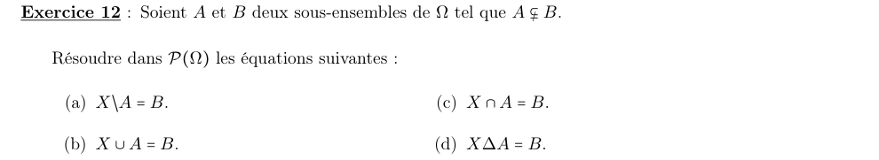
a) \(X\setminus A=B\)
Étape 1 : une condition nécessaire
\(X\setminus A\) ne contient aucun élément de \(A\). Si \(X\setminus A=B\), alors \(A\cap B=\varnothing\).
Étape 2 : confronter à \(A\subseteq B\)
Comme \(A\subseteq B\), \(A\cap B=A\). La condition devient \(A=\varnothing\).
Étape 3 : discuter
- Si \(A\neq\varnothing\) : aucune solution.
- Si \(A=\varnothing\) (possible, avec \(B\neq\varnothing\)) : l'équation devient \(X=B\).
b) \(X\cup A=B\)
Étape 1 : conditions nécessaires
- \(X\subseteq X\cup A=B\) : donc \(X\subseteq B\).
- Un élément de \(B\setminus A\) doit venir de \(X\) : donc \(B\setminus A\subseteq X\).
Étape 2 : vérification
Si \(B\setminus A\subseteq X\subseteq B\) : \(X\cup A\subseteq B\cup A=B\), et \(X\cup A\supseteq(B\setminus A)\cup A=B\). Donc \(X\cup A=B\).
c) \(X\cap A=B\)
Étape 1 : condition nécessaire
\(X\cap A\subseteq A\). Si \(X\cap A=B\), alors \(B\subseteq A\).
Étape 2 : contradiction
Avec \(A\subseteq B\), on obtiendrait \(A=B\), alors que \(A\subsetneq B\).
d) \(X\,\Delta\,A=B\)
Étape 1 : « simplifier » par \(A\)
On applique \(\Delta A\) aux deux membres :
\[ (X\,\Delta\,A)\,\Delta\,A=B\,\Delta\,A \]Étape 2 : simplifier le membre de gauche
\[ (X\,\Delta\,A)\,\Delta\,A=X\,\Delta\,(A\,\Delta\,A)=X\,\Delta\,\varnothing=X \]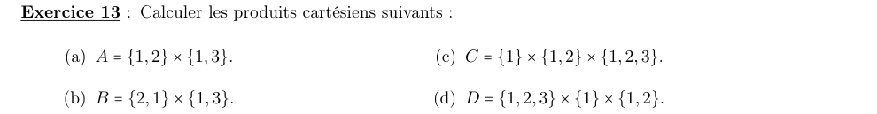
a) \(A=\{1,2\}\times\{1,3\}\)
Étape 1 : nombre de couples
\(2\times 2=4\) couples.
Étape 2 : les lister
b) \(B=\{2,1\}\times\{1,3\}\)
Étape 1 : l'ordre dans un ensemble ne compte pas
\(\{2,1\}=\{1,2\}\), donc \(B\) est le même produit que \(A\).
c) \(C=\{1\}\times\{1,2\}\times\{1,2,3\}\)
Étape 1 : nombre de triplets
\(1\times 2\times 3=6\).
Étape 2 : les lister
d) \(D=\{1,2,3\}\times\{1\}\times\{1,2\}\)
Étape 1 : nombre de triplets
\(3\times 1\times 2=6\).
Étape 2 : les lister
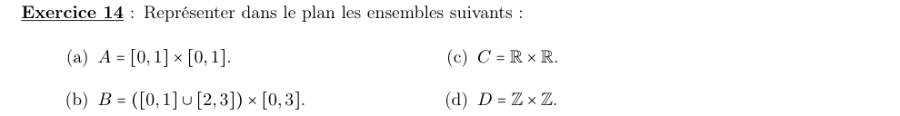
a) \(A=[0,1]\times[0,1]\)
Étape 1 : traduire
Points \((x,y)\) avec \(0\leqslant x\leqslant 1\) et \(0\leqslant y\leqslant 1\).
b) \(B=([0,1]\cup[2,3])\times[0,3]\)
Étape 1 : traduire
\(x\in[0,1]\) ou \(x\in[2,3]\), et \(y\in[0,3]\).
c) \(C=\mathbb R\times\mathbb R\)
Étape 1 : traduire
Aucune contrainte sur \(x\) ni sur \(y\).
d) \(D=\mathbb Z\times\mathbb Z\)
Étape 1 : traduire
\(x\) et \(y\) sont des entiers relatifs.
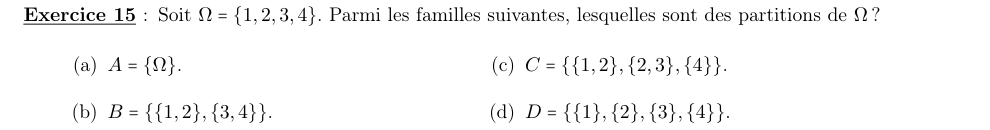
a) \(\mathcal A=\{\Omega\}\)
Étape 1 : tester les trois conditions
Un seul bloc, non vide ; rien à vérifier pour (2) ; la réunion est \(\Omega\).
b) \(\mathcal B=\{\{1,2\},\{3,4\}\}\)
Étape 1 : tester les trois conditions
Blocs non vides ; \(\{1,2\}\cap\{3,4\}=\varnothing\) ; réunion \(\{1,2,3,4\}\).
c) \(\mathcal C=\{\{1,2\},\{2,3\},\{4\}\}\)
Étape 1 : tester la disjonction
\[ \{1,2\}\cap\{2,3\}=\{2\}\neq\varnothing \]d) \(\mathcal D=\{\{1\},\{2\},\{3\},\{4\}\}\)
Étape 1 : tester les trois conditions
Singletons non vides, deux à deux disjoints, de réunion \(\Omega\).
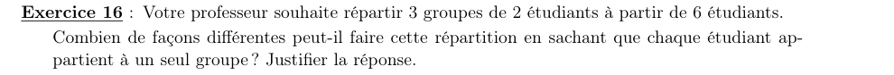
1) Nombre de répartitions
Étape 1 : former des groupes numérotés
On choisit 2 étudiants pour le groupe 1, puis 2 parmi les 4 restants pour le groupe 2, puis les 2 derniers :
\[ \binom{6}{2}\times\binom{4}{2}\times\binom{2}{2}=15\times 6\times 1=90 \]Étape 2 : enlever la numérotation
Les groupes ne sont pas numérotés. Une même répartition a été comptée autant de fois qu'il y a d'ordres sur les 3 groupes, soit \(3!=6\) fois :
\[ \frac{90}{3!}=\frac{90}{6}=15 \]Étape 3 : vérification par une autre formule
Nombre de partitions de 6 objets en 3 paires :
\[ \frac{6!}{(2!)^3\times 3!}=\frac{720}{8\times 6}=15 \]Chapitre 2 du cours M01 (S1). Sources : Chap_2.pdf (cours magistral) et TD02 — Théorie des ensembles. Corrigé rédigé intégralement (pas de corrigé officiel fourni).
📂 Documents donnés
Tous les documents originaux liés à ce chapitre (cours magistral, TD, corrigés…). Cliquez pour ouvrir le PDF.
Cours (CM)
TD (énoncé)
Les documents sont inclus dans ce dossier (sous-dossier documents\) — le paquet est autonome et partageable tel quel.